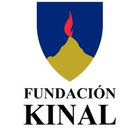
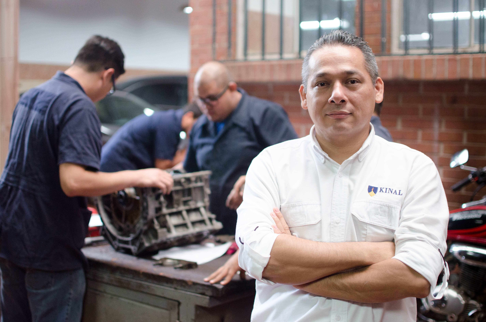
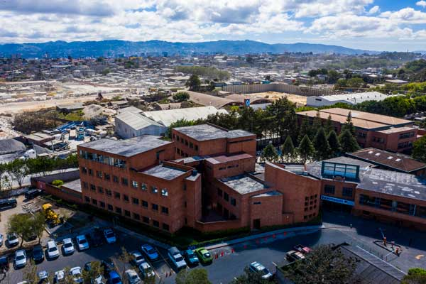
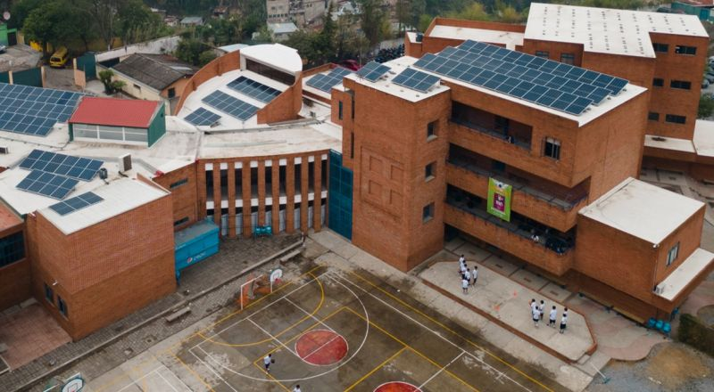

Apoya la Educación Técnica
Tu apoyo transforma vidas y abre oportunidades reales para jóvenes guatemaltecos.


Tu apoyo transforma vidas y abre oportunidades reales para jóvenes guatemaltecos.

La memoria de Labores es una recopilación de los logros y objetivos anuales de la Fundación.

Estamos celebrando 64 años de historia, 64 años de ayuda a la juventud y educación en Guatemala.

Cada imagen refleja la historia de Kinal

